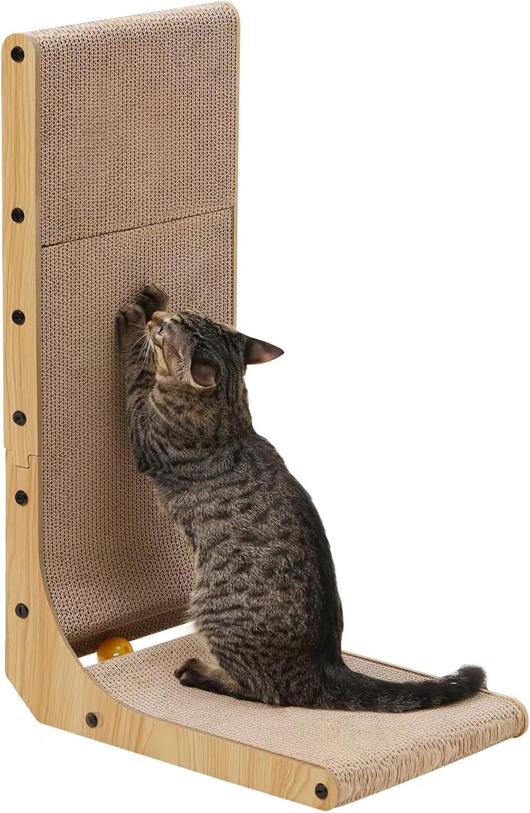
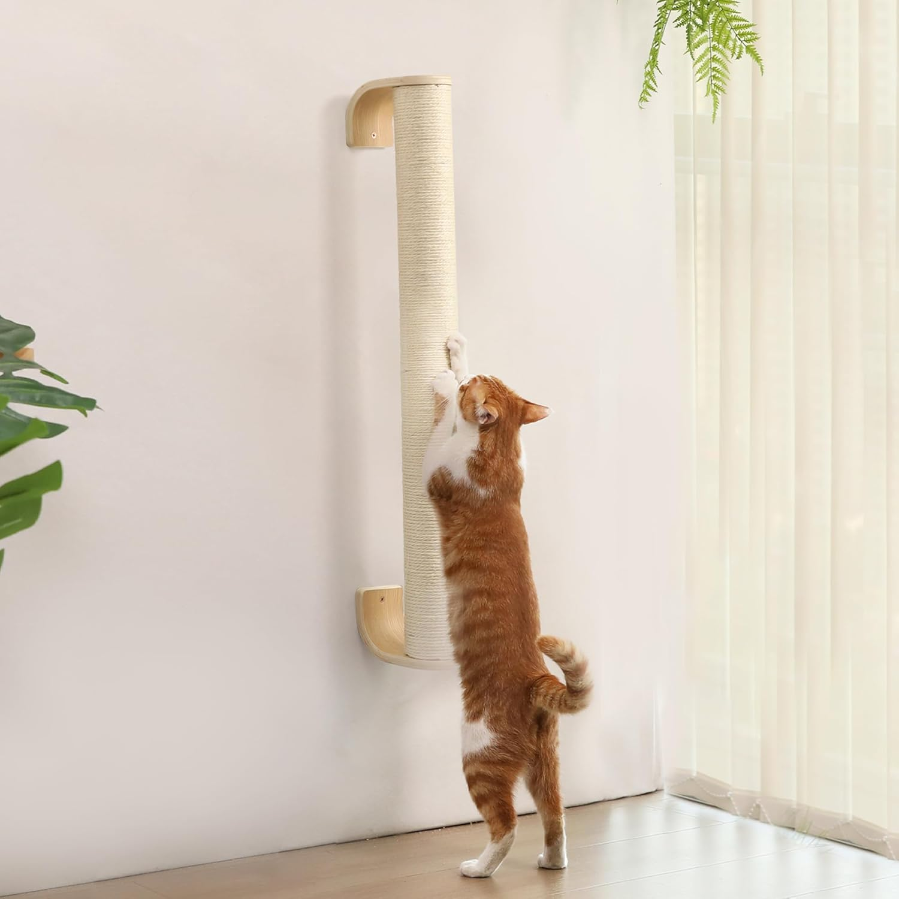
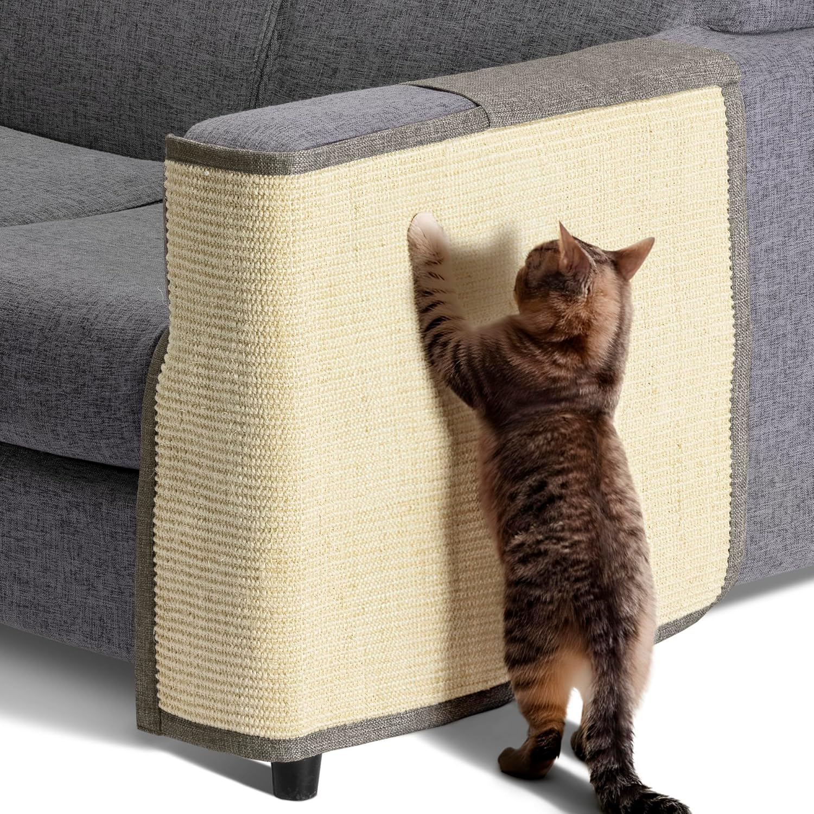

Comparativa rápida — los 3 mejores
| Modelo | Material | Ideal para | Precio | Gato activo | Piso pequeño |
|---|---|---|---|---|---|
| ⭐ Recomendado Rascador de sisal vertical |
Sisal natural | La mayoría | 25–40€ | ✓ | ✓ |
| 🧱 Pared Rascador de pared |
Sisal / cartón | Pisos sin espacio | 15–25€ | ✓ | ✓✓ |
| 🛋️ Sofá Rascador esquinero |
Sisal / felpa | Gatos que arañan el sofá | 20–35€ | ✓ | ✓ |
⭐ Recomendado PataAdvisor

Rascador de Sisal Vertical
"El que más se parece a un árbol. Por eso es el que más usan."
25–40€ / unidad
- Sisal 100% natural — favorito de los gatos
- Altura mínima 60cm — pueden estirarse del todo
- Base estable — no se vuelca al rascar fuerte
- Dura años con uso diario intensivo
🧱 Mejor para pisos pequeños

Rascador de Pared
"Ocupa cero espacio en el suelo. La revolución para pisos pequeños."
15–25€ / unidad
- Se instala en la pared sin obras
- No ocupa espacio en el suelo
- Permite estirarse en vertical
- Fácil de combinar con la decoración
🛋️ Salva sofás

Rascador Esquinero para Sofá
"Va donde el gato araña. La única solución que realmente funciona."
20–35€ / unidad
- Se engancha directamente al sofá
- Redirige el comportamiento al instante
- Protege esquinas y laterales
- Sin taladro — fácil instalación
¿Por qué tu gato no usa el rascador?
Antes de comprar uno nuevo, entiende por qué el que tienes no funciona. Casi siempre es una de estas razones:
Está en el sitio equivocado
Los gatos rascar al despertar. Debe estar donde duermen, no arrinconado.
Es demasiado bajo
Necesitan estirarse completamente. Mínimo 60cm de altura para gatos adultos.
Se tambalea al usarlo
Si se mueve cuando rascan, no vuelven. La base debe ser sólida y pesada.
El material no les gusta
La moqueta no funciona — la usan para caminar, no para rascar. El sisal sí.
El truco definitivo para que use el rascador nuevo
Método PataAdvisor — 2 semanas
Del sofá al rascador sin dramas
1
Semana 1: Pon el rascador exactamente donde araña el sofá — pegado a él, tocándolo. No lo escondas en un rincón.
2
Día 1-3: Frota un poco de matatabi o valeriana en el sisal. El gato lo investigará por curiosidad y empezará a rascar.
3
Premio inmediato: cada vez que use el rascador, dale un premio al instante. El gato aprende por asociación positiva en menos de una semana.
4
Semana 2: mueve el rascador 10cm al día hacia donde quieres que quede. Nunca de golpe — el gato seguirá usándolo.
¿Qué material es mejor — sisal, cartón o moqueta?
Esta es la pregunta que más nos hacen. La respuesta corta: sisal siempre que sea posible.
- Sisal natural: imita la textura de la corteza de árbol. Es lo que los gatos buscan instintivamente. Dura años y mejora con el uso.
- Cartón ondulado: excelente alternativa económica. Muchos gatos lo prefieren para rascar en horizontal. El único inconveniente es que deja restos.
- Moqueta: evítala. Los gatos la asocian al suelo, no al rascado. Además les enseña a arañar las alfombras de casa.
- Cuerda de yute: similar al sisal pero menos duradero. Funciona bien en modelos económicos.
El Consejo de PataAdvisor
"Nunca uses el spray antirasguños en el rascador — el gato lo evitará. Úsalo solo en el sofá que quieres proteger, no en el rascador. El contraste hará que prefiera el sisal."
Mejores fuentes de agua para gatos 2026
El otro accesorio que marca la diferencia en la salud de tu gato →
SOS Calor 2026 — Cómo proteger a tu gato en verano
Hidratación, temperatura y la regla de los 5 segundos →
🐾
Transparencia PataAdvisor
En PataAdvisor solo recomendamos tiendas líderes como Zooplus o Amazon. Comprando a través de nuestros enlaces, nos ayudas a mantener este portal libre de publicidad invasiva y a seguir ofreciendo guías gratuitas. ¡Gracias por tu apoyo! 🐾